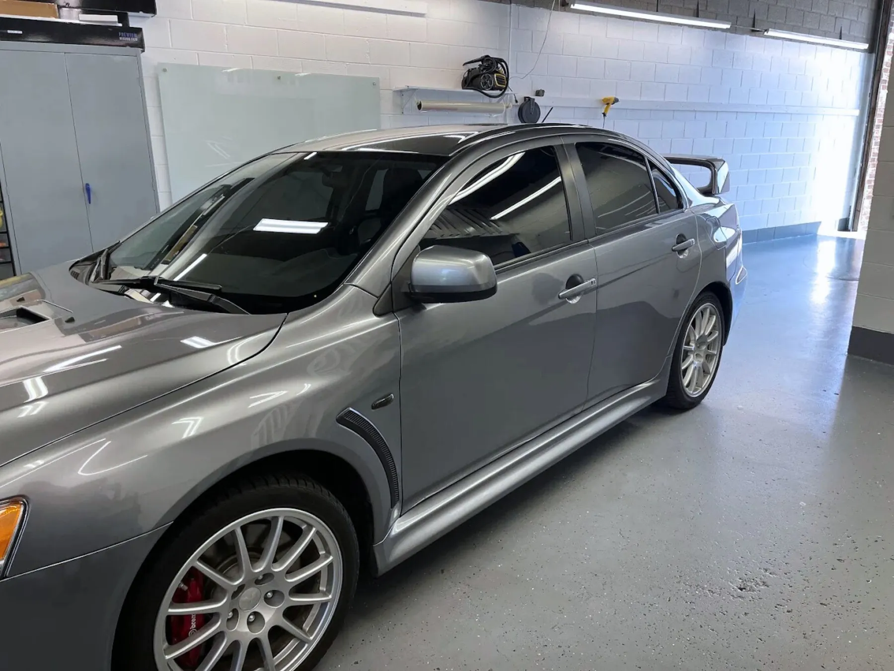
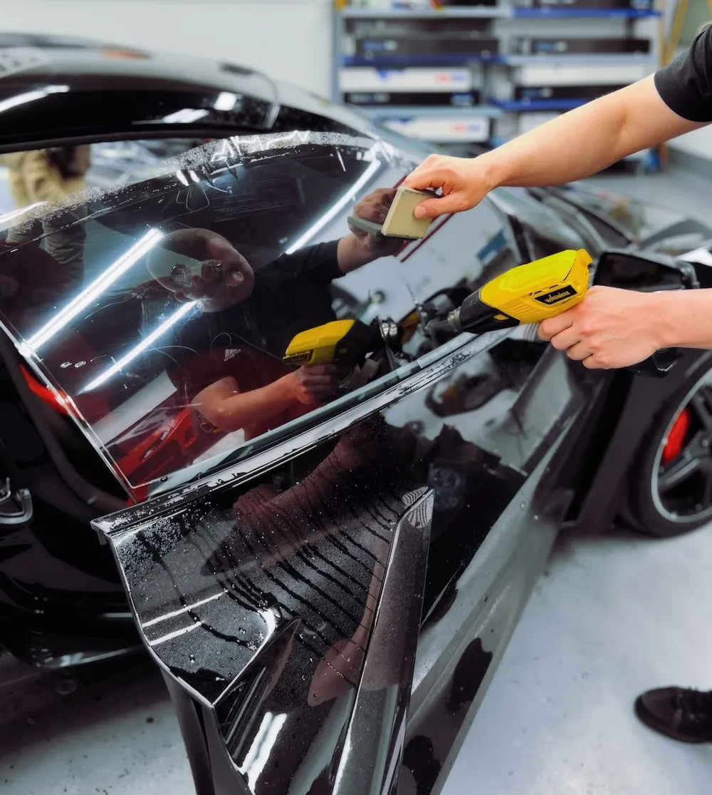
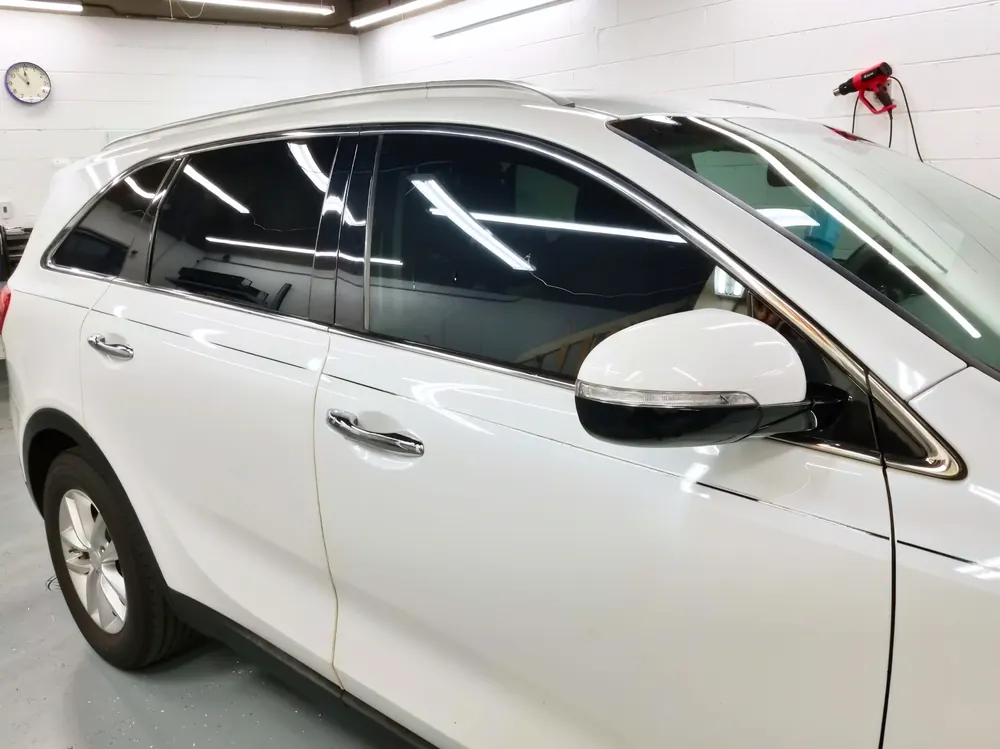
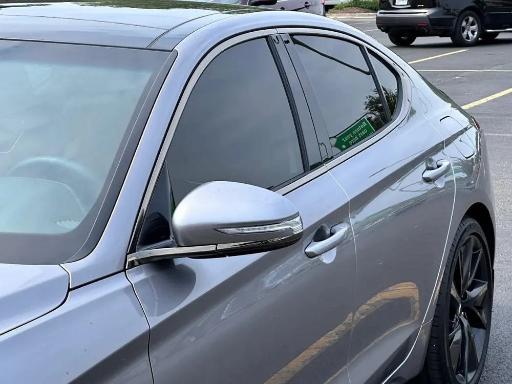
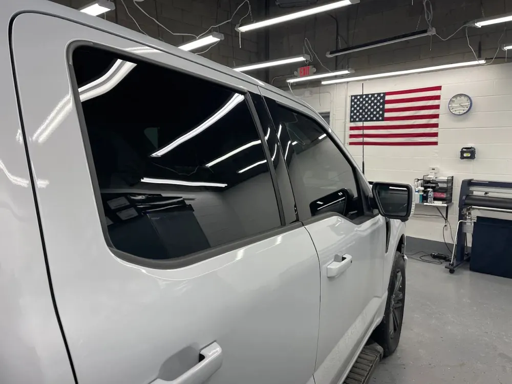
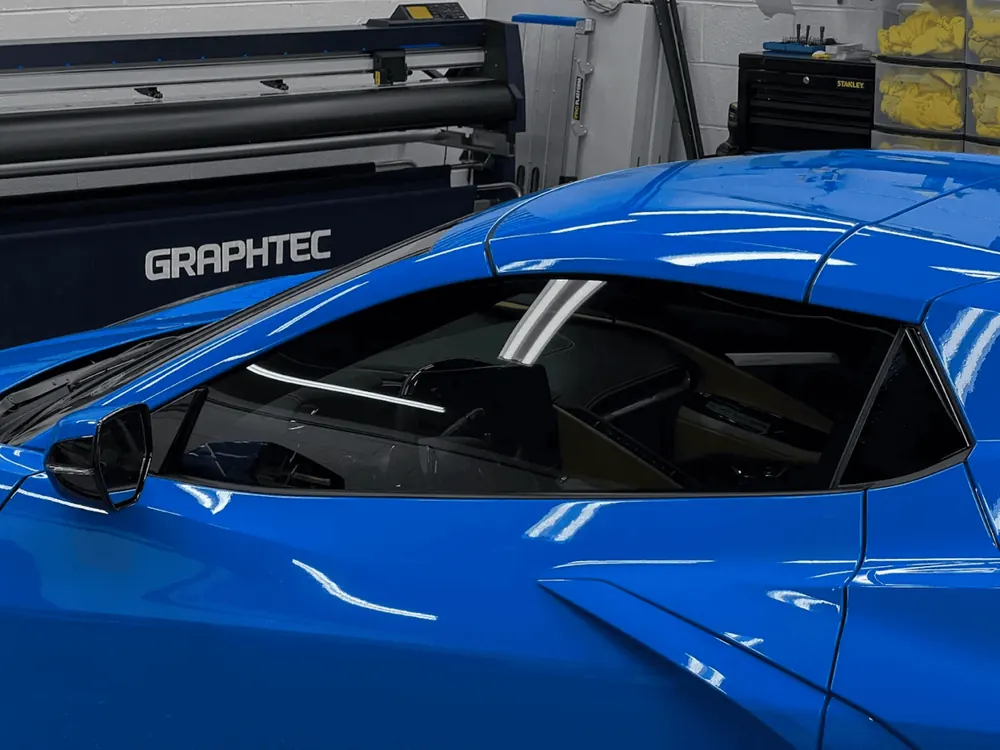

A cooler cabin
Tint reduces the heat inside your car, especially in the hot summer months, so you rely less on the A/C.

(Side Windows + Rear Windshield)
Full side and rear window coverage from Coast 2 City Detailing on Orville Wright Way. Our window tint blocks solar heat and UV rays, cuts glare and improves interior privacy. Open Monday – Saturday, 8 am – 6 pm.
Offer price for side windows + rear windshield. Confirm your vehicle, film, shade and final package with the team before booking.
Window tint is a thin film applied to your car windows to reduce heat, block harmful UV rays and add privacy. Stay cool, look good and drive protected, with a sleek finish on your side windows and rear windshield.
Tint reduces the heat inside your car, especially in the hot summer months, so you rely less on the A/C.
Cut harsh sunlight with a shade chosen for your vehicle and the way you drive.
Blocking up to 99% of UV rays helps keep your seats, dashboard and upholstery from fading or cracking.
Improved interior privacy with full side and rear coverage. Pick anything from a light 70% to a dark 5%.
Performance depends on the film, shade and existing glass. Confirm which film is included in your $299 package. The front windshield is not part of this offer.

At Coast 2 City Detailing, we take pride in our attention to detail. Every tint job is done by skilled technicians, so your windows are tinted with precision, with no bubbles or imperfections.
We use high-quality films backed by manufacturer warranties, plus precision tools and techniques, so the film is perfectly aligned and bonded to your windows.
Find my tint setupKnow what you’re getting before you book. Our team will answer your questions and help you choose the best film and shade for your needs.
Full side window and rear windshield coverage, with your vehicle, film and shade confirmed before installation.
Choose Standard Ceramic, or our premium Nano Ceramic, which blocks 96% of solar heat with 99% UV rejection. Ask which film comes with your $299 package.
5%, 15%, 35%, 50% or 70%. The lower the percentage, the darker the tint. We’ll help you pick the right shade for your lifestyle.
Professional installation with precision tools and techniques avoids common problems like bubbling or peeling.
Visit us at 2955 Orville Wright Way, Suite 120, Wilmington, NC 28405. Open Monday – Saturday, 8 am – 6 pm.
Standard Ceramic film comes with a 10-year warranty, and Nano Ceramic with a lifetime warranty. Confirm the warranty for your package when you book.
A closer look at window tint from Coast 2 City. Find inspiration for your own upgrade.




Real reviews from the Coast 2 City Detailing Google listing.
Visit the Coast 2 City Google listing ↗“What impressed me just as much as the final result was the passion and professionalism this young team brings to their work… they genuinely care about the quality of their work.”View on Google ↗
“I am very impressed with the high quality work from Coast 2 City Detailing… I can’t say enough good things about this amazing team. Highly recommended!!”View on Google ↗
“Was absolutely blown away by the quality of work, and the flexibility of the team. 10/10 highly recommend them, if you have a doubt, trust them.”View on Google ↗
“They went above and beyond to make it easy for me to drop off my car with my busy schedule. My car looked new when it was finished!”View on Google ↗
“Dropped it off the day before picked it up the next morning before work… These guys were great.”View on Google ↗
Ask about old-film removal, any additional charges and warranty terms before booking.
Share a few details and we’ll get back to you with your quote.
Window tint for your side windows and rear windshield for $299. The front windshield is not part of this offer. Confirm your vehicle, film and shade with the team before booking.
We offer 5%, 15%, 35%, 50% and 70% tint levels. The lower the percentage, the darker the tint. We also offer a windshield option, which is priced separately.
Both are high-quality ceramic films, but our Nano Ceramic is the premium option. It blocks 96% of solar heat (vs 80%), offers 99% UV rejection, has a lifetime warranty and gives maximum anti-glare performance. Ask which film is included in your $299 package.
Lighter tints like 35–50% have minimal impact on night visibility. Darker tints like 5–15% are best suited for rear windows. We’ll help you pick the right shade for your lifestyle.
Most installs are completed in 1–3 hours, depending on how many windows are being tinted and the vehicle type.
Our Standard Ceramic film comes with a 10-year warranty, and our Nano Ceramic film is backed by a lifetime warranty.
Avoid rolling down your windows for at least 3–5 days after installation so the film can fully cure. Use a soft cloth and an ammonia-free cleaner when cleaning your windows.
Visit Coast 2 City Detailing at 2955 Orville Wright Way, Suite 120, Wilmington, NC 28405, United States. We’re open Monday – Saturday, 8 am – 6 pm. Get directions on Google Maps, and check the shop’s Google listing for current opening hours before you travel.
Window tint for your side windows + rear windshield.